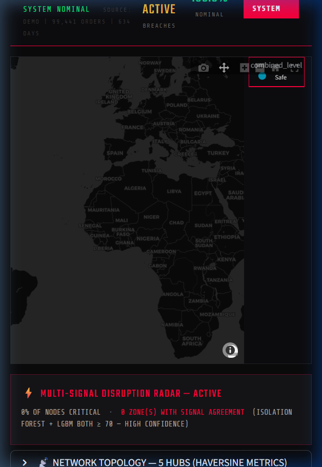

Open-source supply chain intelligence: a freight control tower, an agentic AI copilot that acts on your data, billing audits, health checks, and a decision engine that turns raw order files into execution-ready plans.
View on GitHub Get startedUpload CSV/Excel — or try the built-in demo of 99,000 real orders — and get a live intelligence HUD.

Every number is computed from your data. AI adds reasoning and wording — never the figures.
Every shipment classified — on track, at risk, late — with real on-time performance vs promised dates, exceptions surfaced first, and carrier scorecards graded A–D.
An AI that acts: lists at-risk shipments, drafts SLA-review emails from real scorecard numbers, builds reorder plans, runs audits — via LLM tool calling, with a zero-API-key offline mode.
Billing anomaly detection: per-carrier cost outliers, potential duplicate charges, premiums paid on late deliveries, and your re-tender opportunity.
A scored assessment (0–100, A–F) across delivery, risk, cost discipline, inventory, network efficiency, and data quality — with DIFOT tracking and priority actions.
A data-backed freight tender in one click: monthly lane volumes, incumbent carrier summary, a ready-to-edit RFP document, and a carrier rate-shift simulator.
Safety stock, EOQ, reorder points, and lead-time buffers from real inventory mathematics — stress-tested live in the What-If Lab.
The same decision engine underneath — two very different front doors.